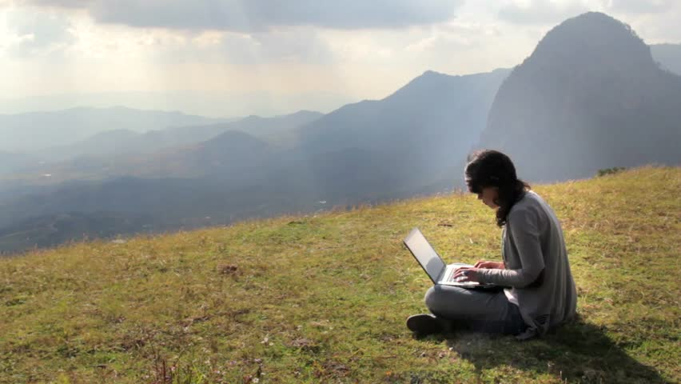
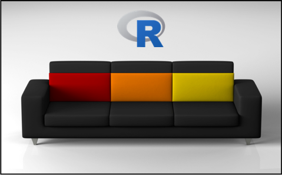
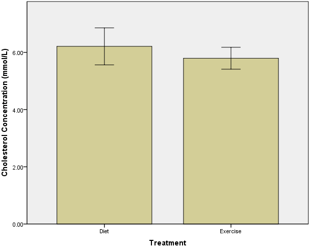
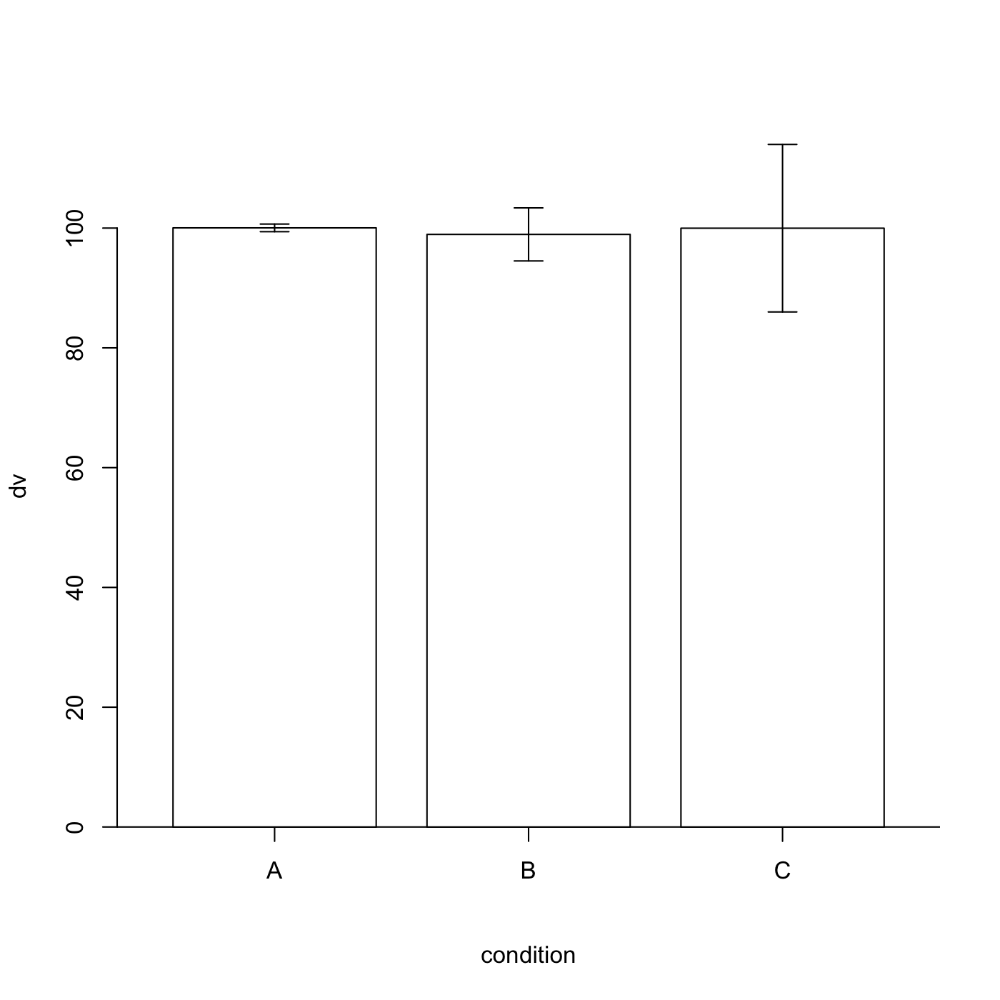
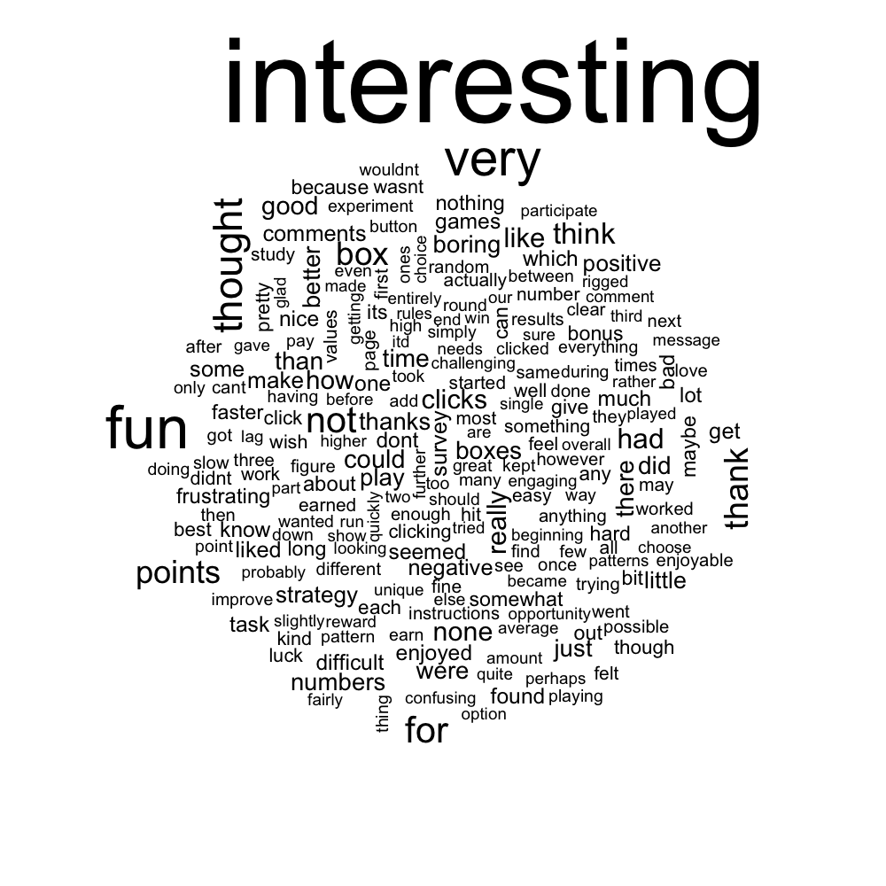
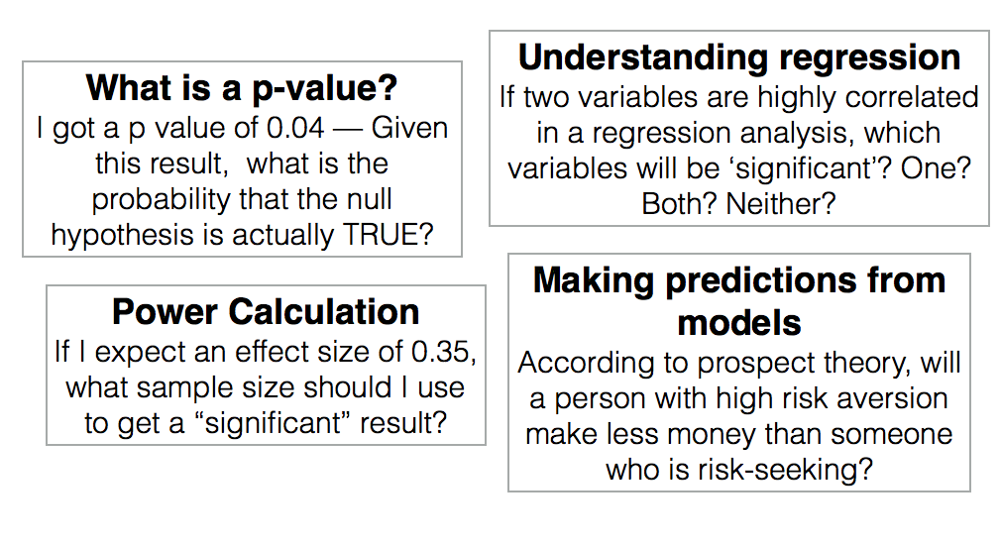
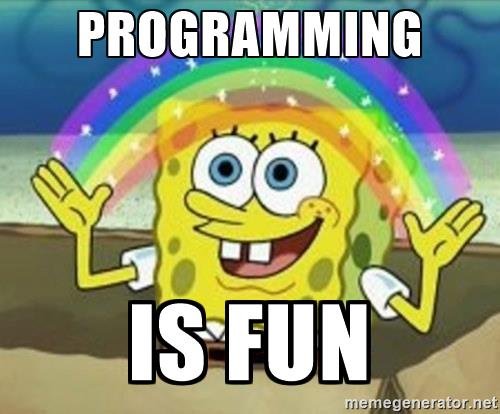
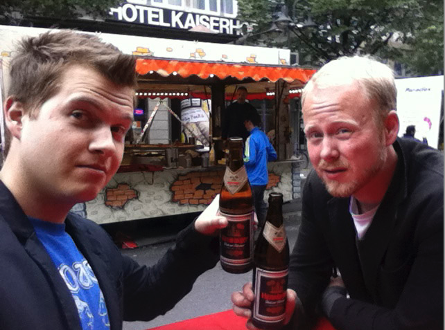
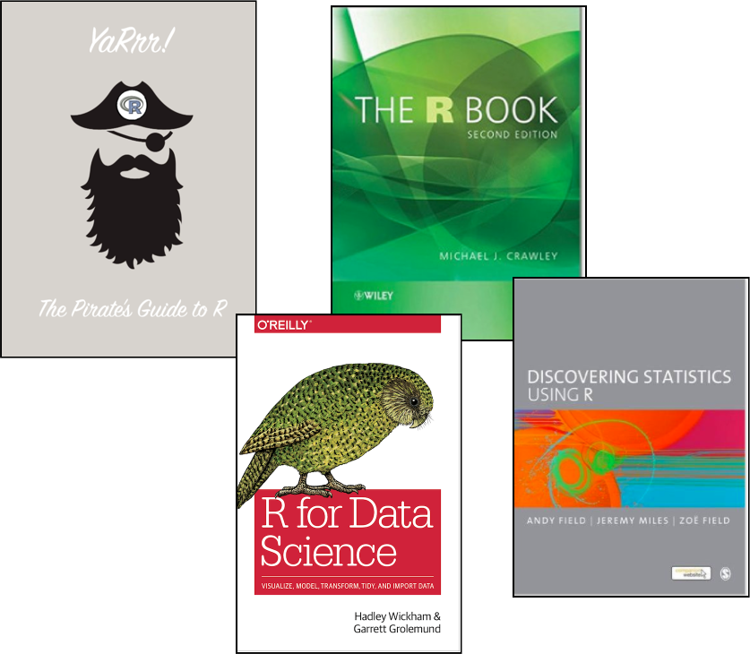

R - The answer to your wildest data dreams
Or, how I learned to stop worrying and love R
Nathaniel Phillips, University of Basel
PsyKo 2017, Bern
Goal
Get you excited about learning R!
My R Journey
- 5 years struggling with SPSS
- Never quite did what I wanted.
- Never could replicate my analyses
- Didn't know how to do anything else
- 5 years of glorious R.
- The first few months were tough
- I discovered new things every day (and still am)
- Pretty soon, I could reproduce 6 months of SPSS analyses in an afternoon.
So you want to become a song writer
Two ways to learn to play songs....
ChordBuddy

Fingers

R has a learning curve...but it's worth it!

R has a learning curve...but it's worth it!
10 reasons why R is so great

Reason 1. Free and open source
- Because R is free and open source, you can always get access to R (unlike SPSS and MatLab)
"To be able to choose between proprietary software packages is to be able to choose your master. Freedom means not having a master. And in the area of computing, freedom means not using proprietary software." -- Richard M. Stallman
"Closed source software [like SPSS and MatLab] is useless crap because it satisfies neither repeatability nor inspectability" -- Titus Brown


Reason 2: Statistics
Of course, R has all of the statistical analyes you could possibly want
Basics
- Hypothesis tests:
t.test(),cor.test(),chisq.test() - Regression, ANOVA:
lm(),anova()
Advanced
- Bayesian Statistics:
ttestBF(),anovaBF(),lmBF() - Heirarchical models:
lmer() - Factor analysis:
factanal()

Reason 3. Access to the latest, greatest
- Because it's open source, there is a huge community of R developers.
- If someone comes up with something cool, they will share it and you'll get immediate access.
Reason 4: Plotting
- Graphics are like designer cars, when it's made by a great manufacturer (like R), you can see it. When it's made cheaply, (like SPSS), you can see that too.


Barplot
SPSS Barplot

R pirateplot

Two plots of the same data
Barplot

Pirateplot
Scatterplot
SPSS Scatterplot

R scatterplot

R balloon plot

More R plots
Radar chart

Text cloud

Reason 5: Simulations
- In R, you can run simulations to directly answer important statistical questions

Reason 6: Replication and sharing

Reason 7: Writing reports and APA style papers

Reason 8: Write interactive websites and experiments with Shiny
- Create interactive websites and even write entire experiments with RShiny

Reason 9: R is a transferable skill
- R is one of the top languages for statistical analysis (along with Python).
- If you learn R for psychology, you can use it in any other analytic field.

Reason 10: It's FUN
- You will have more fun with R than any other software, I promise.
- People use SPSS because they have to, people use R because they want to.

Why R is so great
- Free and open source
- Always have the latest, greatest methods
- Tell R what you want to do with your keyboard, rather than your mouse.
- Statistics (duh)
- Plotting
- Simulations
- Replication and Sharing
- Writing reports and APA documents
- Contributing to the R community
- Bonuses!!

Questions before the tutorial?
Tutorial
Get started
- Open the `PsyKo.zip file: Available at https://dl.dropboxusercontent.com/u/7618380/PsyKo.zip
- Open the
PsyKo.Rprojfile in the folder. - Learn the basics of using RStudio.
- Open
rmds/PsyKo_RBasics.Rmdand go through the R basics (or view online at http://rpubs.com/YaRrr/PsyKo-RBasics) - Open
r/jordan_analyses.Rand replicate Jordan et al. - Open
rmds/jordan_apa.Rmdand explore writing APA articles
I am ready to learn more R! What can I do?
- Find someone who knows R to help you
- Get an R book or take an online course
- Join an R group on social media
- Attend an intensive R bootcamp
- September, 2017: Basel

R books and Courses
| Book | Author |
|---|---|
| YaRrr! The Pirate's Guide to R | Nathaniel Phillips |
| R for Data Science | Wickham & Grolemund |
| The R book | Crawley |
| Discovering Statistics using R | Field & Miles |
| Course | Link |
|---|---|
| Coursera | https://www.coursera.org/courses?query=R |
| DataCamp | https://www.datacamp.com/courses/free-introduction-to-r |

Social Media
- www.r-bloggers.com
- Facebook: R Users Psychology


Contact
This presentation: https://ndphillips.github.io/PsyKo-March2017/
My Website: http://ndphillips.github.io
Email: Nathaniel.D.Phillips.is@gmail.com
YaRrr! The Pirate's Guide to R https://www.thepiratesguidetor.com